2012-2016
Bd Bacatá
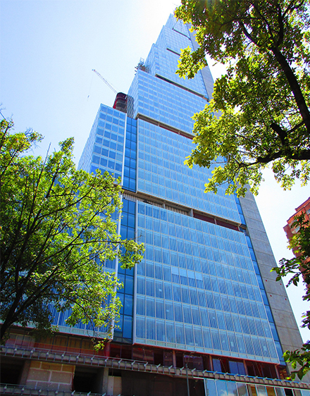
Actualmente el proyecto ubicado en la carrera 5 con calle 19 avanza en la construcción del piso 38 y 15 en la torre sur y norte respectivamente, el edificio del costado sur contará con 240 metros de altura en sus 67 plantas, el cual se convertirá y pasará a la historia como el primer rascacielos construido en Colombia.
El lugar está pensado para ofrecer los servicios de vivienda, oficinas, hotel, centro comercial de convivencia y parqueadero tanto privado como público.
El lugar está pensado para ofrecer los servicios de vivienda, oficinas, hotel, centro comercial de convivencia y parqueadero tanto privado como público.
2013-2016
Torre E (North Point)
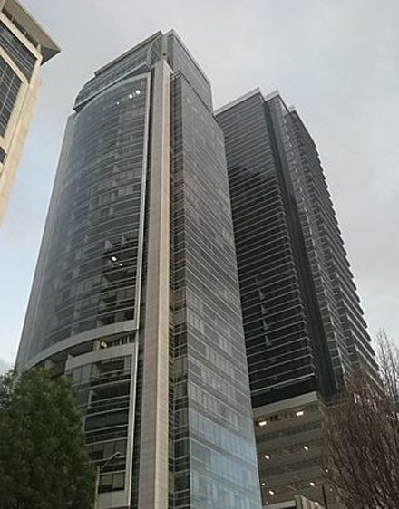
La Torre E se encuentra en construcción y será la quinta edificación del complejo North Point.
Será una torre de oficinas con 45 pisos habitables y 172 metros del altura superando a las cuatro torres que se han construido hasta el momento en el complejo.5 Contará con 2 locales comerciales y 500 parqueaderos, además dos auditorios con capacidad para 90 personas, salas de juntas, salas VIP y una mini terraza.
Será una torre de oficinas con 45 pisos habitables y 172 metros del altura superando a las cuatro torres que se han construido hasta el momento en el complejo.5 Contará con 2 locales comerciales y 500 parqueaderos, además dos auditorios con capacidad para 90 personas, salas de juntas, salas VIP y una mini terraza.
2014-2016
City U
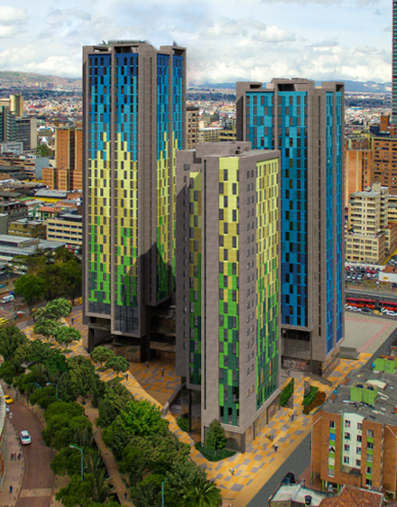
City U está conformado por 3 torres de residencias, con capacidad para cerca de 1.800 estudiantes de pregrado, posgrado y profesores tanto de Bogotá como de las diferentes ciudades y municipios del país, quienes podrán acceder a espacios privados que van desde una a cuatro habitaciones, todas amobladas, con baño interior y todos los servicios requeridos por sus habitantes, como son internet, cable y aseo.
El proyecto cuenta además con 1.700 m2 de zonas comunes exclusivas, dispuestas para espacios de estudio, esparcimiento y recreación.
El proyecto cuenta además con 1.700 m2 de zonas comunes exclusivas, dispuestas para espacios de estudio, esparcimiento y recreación.
2015-2018
Amerca Central de Negocios
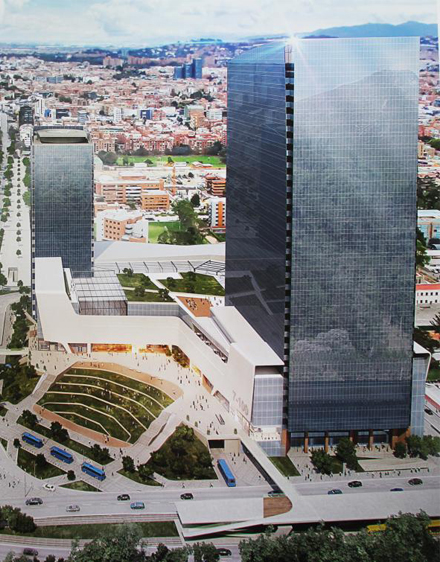
Es un plan parcial de renovación urbana denominado El Pedregal ubicado entre la carrera séptima y la carrera 8A, y entre la calle 100 y la calle 102 en la ciudad de Bogotá.
En el lugar se construyen dos torres destinadas para el uso de oficinas, una de ellas contará con 20 pisos y la otra con 32 pisos. El complejo contará con una estación intermodal para el sistema de transporte masivo TransMilenio sobre la calle 100, metro ligero sobre la carrera séptima y un paradero subterráneo para el SITP.
En el lugar se construyen dos torres destinadas para el uso de oficinas, una de ellas contará con 20 pisos y la otra con 32 pisos. El complejo contará con una estación intermodal para el sistema de transporte masivo TransMilenio sobre la calle 100, metro ligero sobre la carrera séptima y un paradero subterráneo para el SITP.
2016-2019
Oikos Infinitum
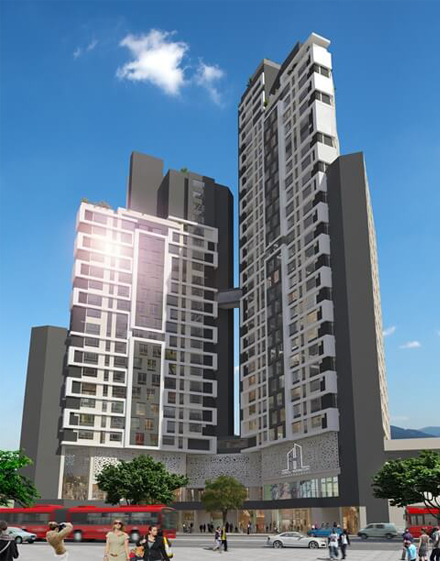
Consta de apartaestudios ubicados en Chapinero, sitio con ubicación estrategica pensada y destinada a brindar cercanía, con los múltiples centros financieros, empresariales y universitarios que se encuentran a su alrededor.
El proyecto contempla el uso mixto entre comercio y vivienda, donde en el primer piso de la plataforma contará con locales comerciales, el lobby de acceso a las torres, zonas de servicios y un salón de reuniones como equipamiento comunal. En el segundo piso habrá una plazoleta de comidas y estacionamientos para visitantes.
En el piso dieciséis, estará el Gimnasio de las dos torres.
El proyecto contempla el uso mixto entre comercio y vivienda, donde en el primer piso de la plataforma contará con locales comerciales, el lobby de acceso a las torres, zonas de servicios y un salón de reuniones como equipamiento comunal. En el segundo piso habrá una plazoleta de comidas y estacionamientos para visitantes.
En el piso dieciséis, estará el Gimnasio de las dos torres.
2015-2020
Torres Atrio
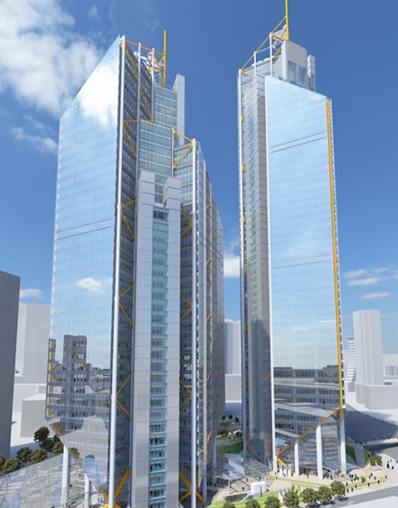
Es un proyecto novedoso en sus condiciones arquitectónicas y técnicas.
Con la participación de firmas de clase mundial, éste proyecto localizado en la Avenida Caracas, entre calle 26 y calle 28 reactivará esta estratégica esquina del Centro Internacional de Bogotá.
El proyecto comprende dos torres de uso mixto, una plataforma de espacio público y áreas comunes, cinco sótanos de parqueos y servicios complementarios.
Las torres cuentan con una estructura combinada de concreto y acero estructural con elementos metálicos a la vista, y una fachada en vidrio de alta tecnología.
Con la participación de firmas de clase mundial, éste proyecto localizado en la Avenida Caracas, entre calle 26 y calle 28 reactivará esta estratégica esquina del Centro Internacional de Bogotá.
El proyecto comprende dos torres de uso mixto, una plataforma de espacio público y áreas comunes, cinco sótanos de parqueos y servicios complementarios.
Las torres cuentan con una estructura combinada de concreto y acero estructural con elementos metálicos a la vista, y una fachada en vidrio de alta tecnología.
2018
Torre Barcelona
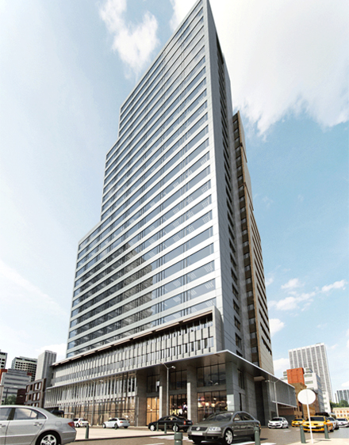
A una cuadra del BD Bacatá, se llevará a cabo la construcción de la Torre Barcelona, que con más de 100 metros de altura y 28 pisos, será una de las mega obras del plan de densificación del centro de Bogotá.
El proyecto consta de un edificio con 15.000m2 de oficinas, un ‘condominio estudiantil’ con 148 habitaciones y amplias zonas comunes”, dijo Jaime Acosta, socio del equipo desarrollador de la torre.
El proyecto consta de un edificio con 15.000m2 de oficinas, un ‘condominio estudiantil’ con 148 habitaciones y amplias zonas comunes”, dijo Jaime Acosta, socio del equipo desarrollador de la torre.
2019
Estación Central
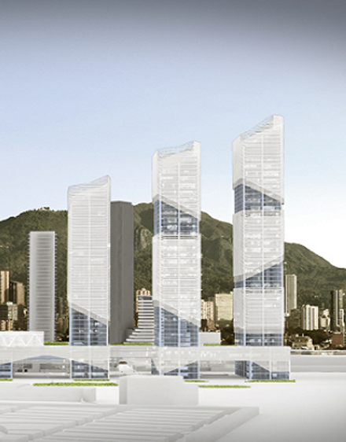
Con el Metro de Bogotá, esta sería una de las obras más ambiciosas en materia de movilidad. La Estación Central estaría ubicada de la Avenida Caracas a la transversal 17; y entre las calles 24 y 26.
La idea es conectar los corredores viales de la Caracas, La 10ª y la Calle 26 de forma subterránea. El proyecto estipula que movilizará a 6.500 personas por hora en el centro de Bogotá. Además, en la superficie se construirían viviendas, oficinas y locales comerciales.
La idea es conectar los corredores viales de la Caracas, La 10ª y la Calle 26 de forma subterránea. El proyecto estipula que movilizará a 6.500 personas por hora en el centro de Bogotá. Además, en la superficie se construirían viviendas, oficinas y locales comerciales.
2020
Torres Trump
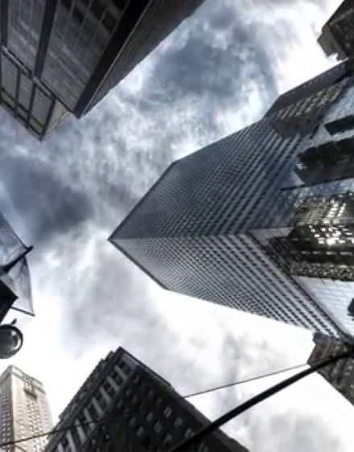
Las Torres Trump o Trump International Hotel & Tower Bogotá será un complejo arquitectónico que se construiría en Bogotá. El proyecto estará ubicado en el nororiente de la ciudad en un lote de 9160 m².
Serán dos torres de 72 pisos con 340 metros de altura cada una. Una de las torres se utilizará para uso residencial y la otra para uso hotelero.1 El complejo fue diseñado por el arquitecto Rugel Chiriboga. La empresa colombiana Fortun será la encargada de realizar la construcción de los dos edificios con una inversión de 350 millones de dólares.
Serán dos torres de 72 pisos con 340 metros de altura cada una. Una de las torres se utilizará para uso residencial y la otra para uso hotelero.1 El complejo fue diseñado por el arquitecto Rugel Chiriboga. La empresa colombiana Fortun será la encargada de realizar la construcción de los dos edificios con una inversión de 350 millones de dólares.
Indefinido
Entre Calles
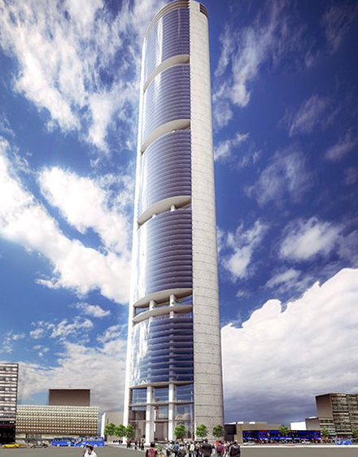
El proyecto tendrá lugar en la intersección de la Calle 19 con carrera 7 en el costado suroccidental y aunque no se ha conocido el monto total de inversión para su construcción si se sabe que será el rascacielos más alto que tendrá Colombia en los próximos años con cerca de 420 metros de altura en sus 96 pisos.
El diseño de Entre Calles representará elementos característicos de la ciudad como los cerros y la sabana, lo vertical y lo horizontal, la torre y la plaza. Su uso estará dirigido a los servicios bajo el modelo de fidecomiso.
El diseño de Entre Calles representará elementos característicos de la ciudad como los cerros y la sabana, lo vertical y lo horizontal, la torre y la plaza. Su uso estará dirigido a los servicios bajo el modelo de fidecomiso.
Indefinido
Torre Paseo Real
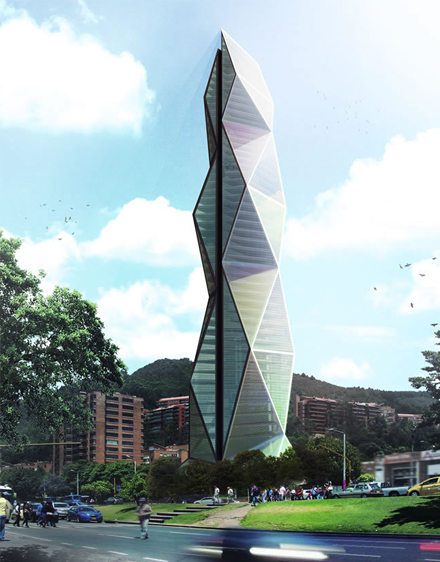
La Torre Paseo Real, una megaestructura con 62 pisos y más de 250 metros de altura.
El edificio aparece en el portafolio del consorcio EQV, un grupo de arquitectos con más de 20 años de experiencia que está desarrollando importantes proyectos en China, Estados Unidos, India, entre otro países.
El diseño preliminar fue elaborado por Arup, empresa que ha participado en proyectos como Ágora Bogotá y la ampliación del aeropuerto El Dorado, lo que daría solidez al proyecto.
El diseño contempla hasta el momento un área de construcción de 130 mil metros cuadrados.
El edificio aparece en el portafolio del consorcio EQV, un grupo de arquitectos con más de 20 años de experiencia que está desarrollando importantes proyectos en China, Estados Unidos, India, entre otro países.
El diseño preliminar fue elaborado por Arup, empresa que ha participado en proyectos como Ágora Bogotá y la ampliación del aeropuerto El Dorado, lo que daría solidez al proyecto.
El diseño contempla hasta el momento un área de construcción de 130 mil metros cuadrados.
Indefinido
Estación de la Sabana
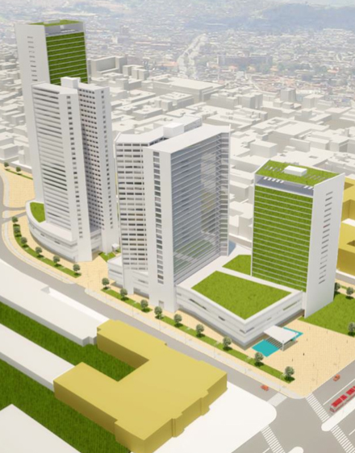
Próximamente en el corazón de Bogotá, a sólo 150 metros de la estación del Transmilenio de la Sabana, usted encontrará un proyecto único, de usos mixtos, con áreas comerciales, empresariales y de vivienda con las mejores áreas y espacios, con todos los atributos que se requieren para la conceptualización de un proyecto insuperable.
Este proyecto arquitectónico ubicado en la localidad de Mártires, será una herramienta de revitalización para el centro de la ciudad, factible de ser generador de sinergia entre lo público y lo privado en el desarrollo de un proceso de renovación urbana, que se convertirá en hito para la ciudad, generará progreso económico y tejido cultural, mejorando la calidad de vida de sus habitantes.
Este proyecto arquitectónico ubicado en la localidad de Mártires, será una herramienta de revitalización para el centro de la ciudad, factible de ser generador de sinergia entre lo público y lo privado en el desarrollo de un proceso de renovación urbana, que se convertirá en hito para la ciudad, generará progreso económico y tejido cultural, mejorando la calidad de vida de sus habitantes.
Indefinido
Torre Edificio de los Ministerios
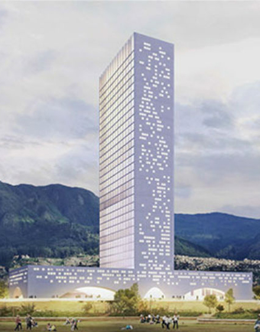
Este proyecto, planteado por la empresa Virgilio Barco, busca organizar los ministerios y entidades públicas, entre las calles 6 y 10; y las carreras 7 y 10.
El diseño del proyecto fue elaborado por el arquitecto Juan Pablo Ortiz, y prevé realizar la obra en nueve manzanas que rodeen la Casa de Nariño, con una torre de 40 pisos y edificios de 8 plantas, que además se conecte con el Parque Tercer Milenio.
El diseño del proyecto fue elaborado por el arquitecto Juan Pablo Ortiz, y prevé realizar la obra en nueve manzanas que rodeen la Casa de Nariño, con una torre de 40 pisos y edificios de 8 plantas, que además se conecte con el Parque Tercer Milenio.
Indefinido
Torre Bogotá
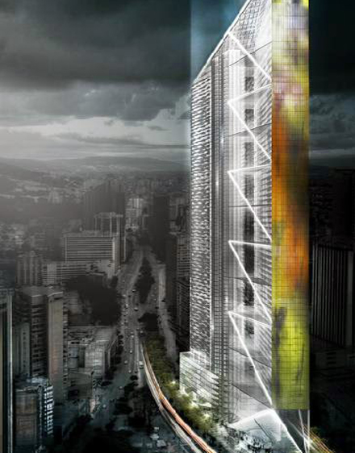
La Torre Bogotá, se eleva a 388 metros sobre un terreno en forma de cuchilla en el Centro Internacional de la ciudad capital, al frente del Museo Nacional de Colombia, convirtiéndola en la torre más alta de Latinoamérica. La fusión de conceptos funcionales, estructurales, energéticos, y estéticos son la raíz de su idea arquitectónica, la simplicidad y la ligereza.
Su forma se desprende de la determinante geometría del terreno. El cuerpo principal se libera por encima de la base y se difumina en la altura a través de la desmaterialización de su piel.
En la base, la torre actua como un catalizador de funciones urbanas, la claridad en la organización de usos y su porosidad, aseguran la conexión con el tejido urbano.
Su forma se desprende de la determinante geometría del terreno. El cuerpo principal se libera por encima de la base y se difumina en la altura a través de la desmaterialización de su piel.
En la base, la torre actua como un catalizador de funciones urbanas, la claridad en la organización de usos y su porosidad, aseguran la conexión con el tejido urbano.
Indefinido
North Point 6
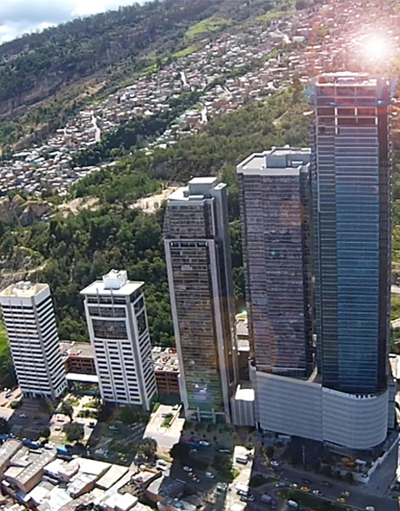
El North Point Business Center o simplemente North Point es un complejo de edificios ubicado en Usaquén, al nororiente de Bogotá. Tiene proyectada la construcción de 8 torres en total, de las cuales ya se encuentran construidas cuatro y una más se encuentran en construcción.
Debido a la construcción de estas torres, la zona se convierte en un lugar diferente al centro de la ciudad para la instalación de nuevas compañías que llegan a Colombia.
Debido a la construcción de estas torres, la zona se convierte en un lugar diferente al centro de la ciudad para la instalación de nuevas compañías que llegan a Colombia.